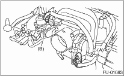
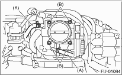

1. Disconnect the ground cable from the battery.

2. Remove the air intake chamber. 
3. Disconnect the connectors from throttle position sensor and manifold absolute pressure sensor.

|
(A) |
Throttle position sensor |
|
(B) |
Manifold absolute pressure sensor |
4. Disconnect the engine coolant hoses (A) from throttle body.
5. Remove the bolts (B) which secure throttle body to intake manifold.
